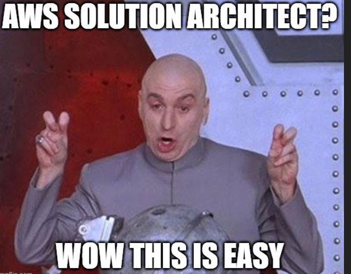

class: center, middle --- # Como foi a preparação para exame AWS Solutions Architect Associate <p style = "text-align: center;">  </p> ###### por Ezzio Moreira --- # Quem sou eu???? ## Ezzio Moreira ```shell - Adepto da cultura DevOps. - Estou apredendo IAC. - Atualmente sou Analista de Infraestrutura na Omnilink. (Próxima semana inicio uma nova jornada na Pagar.Me como DevOps/SRE) - Agora posso dizer que sou certificado AWS. - Adoro uma cerveja artesanal. ``` <p style = "text-align: right;"> </p> --- # Como foi minha preparaçao? Trabalho com AWS a um tempo isso facilitou um pouco minha vida 😁😁😁. * Curso prático: - [Certificação Amazon AWS Solution Architect - 2021 - Andre Iacono.](https://www.udemy.com/course/certificacao-amazon-aws-2019-solutions-architect/) - Leitura da Documentação: https://docs.aws.amazon.com/pt_br/ - Leitura FAQs: https://aws.amazon.com/pt/faqs/ - Ferramenta [Quizle](https://quizlet.com/) <p style = "text-align: right;"> <img src="https://github.com/EzzioMoreira/talk-aws-saa-c02/blob/main/img/img2.jpg" height="200" width="200" alt = "img2"> </p> --- # Como foi minha preparaçao? * Simulados: - [Simulado Exame Amazon AWS Solutions Architect SAA C02 - Andre Iacono.](https://www.udemy.com/course/simulado-certificacao-amazon-aws-solutions-architect-2019) - [Simulado AWS Certified Solutions Architect Associate - Webfor.](https://www.youtube.com/c/WebforTreinamentos/featured) - Analisar os pontos fracos após simulado e ler Documentação do serviço. <p style = "text-align: right;"> <img src="https://github.com/EzzioMoreira/talk-aws-saa-c02/blob/main/img/img3.jpg" height="210" width="300" alt = "img3"> </p> --- # Como foi n o dia do exame? - Execute o teste do sistema dias antes do seu exame. - Jogue vídeo Game algumas horas antes da prova 😎. - Feche todos os seus aplicativos. - Faça login na sua conta uns 40 minutos antes do exame para iniciar o processo de check-in. - Não invente de beber energetico 😵 enquanto faz o exame. <p style = "text-align: right;"> <img src="https://github.com/EzzioMoreira/talk-aws-saa-c02/blob/main/img/img4.JPG" height="200" width="280" alt = "img4"> </p> --- # Contatos. - [https://www.linkedin.com/in/ezzio-moreira-89587898/](https://www.linkedin.com/in/ezzio-moreira-89587898/) - [https://github.com/EzzioMoreira](https://github.com/EzzioMoreira) <p style = "text-align: center;"> <img src="https://github.com/EzzioMoreira/talk-aws-saa-c02/blob/main/img/img5.JPG" height="300" width="400" alt = "img5"> </p>